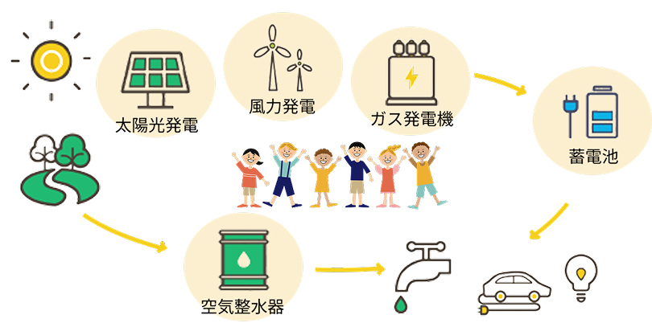
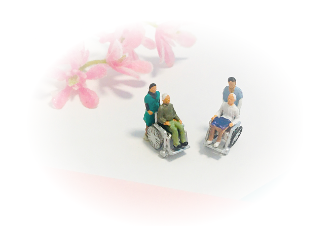
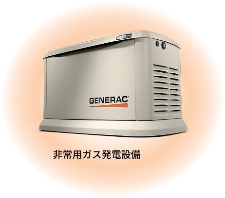
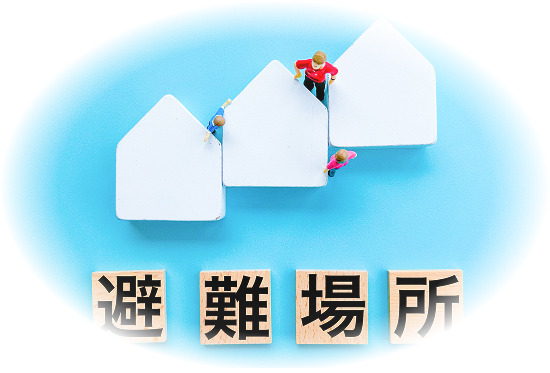
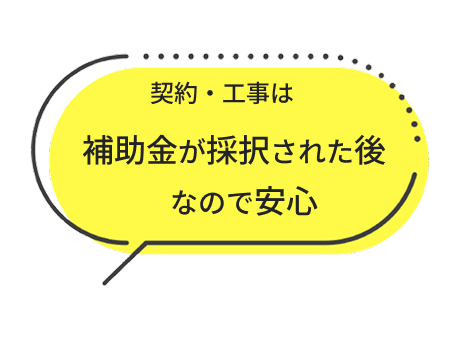

― 設備導入のチャンスを逃さないために ―
制度をうまく活用することで、初期費用の負担を大きく減らし、
安心で持続可能な設備運用が可能になります。
対象となる取り組み
- ◯非常用電源や蓄電池の導入
- ◯太陽光発電など再生可能エネルギー設備
- ◯空調・照明など省エネ設備への更新
- ◯防災関連設備（非常灯、備蓄用電源など）
- ◯脱炭素・「見える化」やエネルギー管理システムの導入

厚生労働省
| 対 象 | 補助金額・補助率 |
|---|---|
|
小規模施設(29人以下) 特別養護老人ホーム ケアハウス 介護老人保健施設 介護医療院 |
1施設につき 上限 1540万円 |
|
小規模施設(29人以下) 養護老人ホーム 小規模多機能型居宅介護事業所 認知症高齢者グループホーム など |
1施設につき 上限 773万円 |
|
特別養護老人ホーム 軽費老人ホーム 介護老人保健施設 養護老人ホーム 介護医療院 |
補助率 3／4 （上限なし） |

導入プラン例

24kW（定格出力）を導入した場合
1日の発電量 約500kWh
低圧電力で、電気料金が約400,000円/月の場合、
導入することで施設全体の停電回避可能。
設備費用 10,000,000円
補助金 10,000,000円
自己負担 0円
9kW（定格出力）を導入した場合
1日の発電量 約200kWh
低圧電力で、電気料金が約150,000円/月の場合、
導入することで施設全体の停電回避可能。
設備費用 7,500,000円
補助金 7,500,000円
自己負担 0円
※機器、工事費含む。消費税別
太陽光発電や蓄電池との組み合わせ、
また電気だけでなく、空気から水を作る空気整水器も併用可能。
各補助金の条件により異なりますので、まずはご相談ください。

経済産業省

令和7年度 災害時に備えた社会的重要インフラへの自衛的な燃料備蓄推進事業
| 対 象 | 補助金額上限 | 補助率 |
|---|---|---|
| 避難所機能を有する施設 | 1000万円 | 1／2 ※中小企業は2／3 |
| 公的避難所 | 3000万円 | 1／2 |
| 一時避難所 | 5000万円 | 1／2 |
申請から導入まで、ワンストップでサポート

補助金や助成金は「申請が複雑そう」「期限が短くて難しそう」と感じられることもあります。
私たちは、制度のご案内から申請書類の作成、設備の選定・施工、報告書の作成までをトータルでサポートします。
サポート内容 :
- 制度内容、募集時期のご案内
- 補助対象設備の選定・見積作成
- 申請書類の作成支援
- 導入、施工
- 実績報告・申請後フォロー
補助金申請には準備期間が必要です。
計画的に進めるためにも、早めのご相談がおすすめです。
すぐに導入や申請をしなくても大丈夫。
来年度を見据えて、今できる備えを知るところから始めてみませんか？